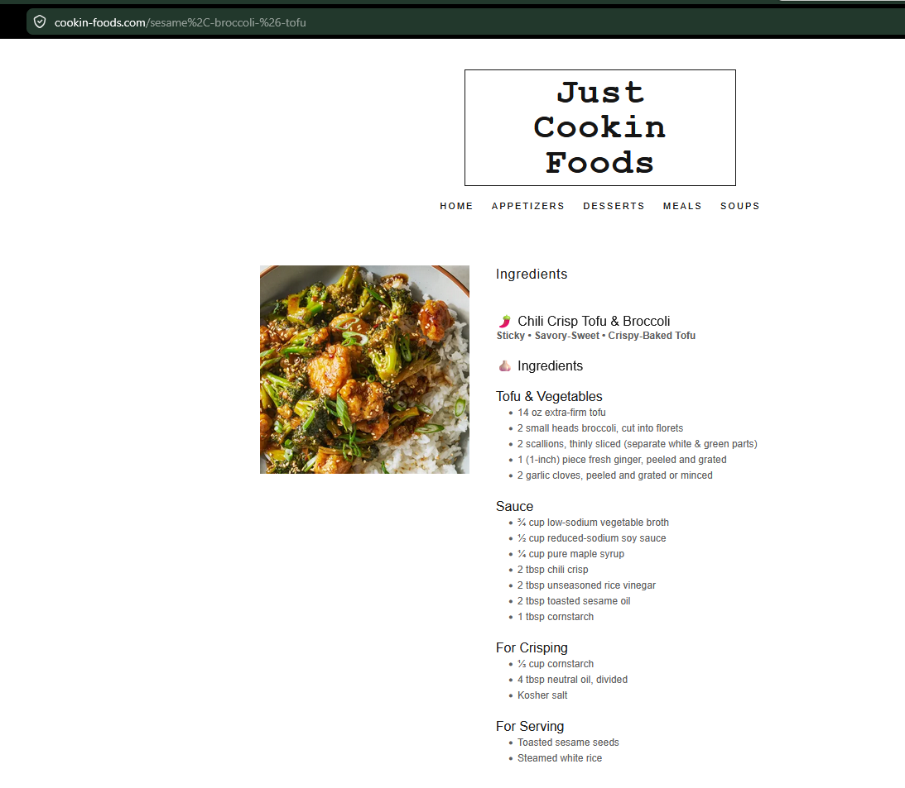

Meals
Chili Crisp Tofu & Broccoli
Sticky, savory-sweet tofu and broccoli with chili crisp sauce over rice.
Ingredients
Tofu and Vegetables
- 14 oz extra-firm tofu
- 2 small heads broccoli, cut into florets
- 2 scallions, thinly sliced
- 1-inch piece fresh ginger, grated
- 2 garlic cloves, grated or minced
- Neutral oil
- Kosher salt
- Steamed white rice
Sauce
- ¾ cup low-sodium vegetable broth
- ½ cup reduced-sodium soy sauce
- ¼ cup pure maple syrup
- 2 tbsp chili crisp
- 2 tbsp unseasoned rice vinegar
- 2 tbsp toasted sesame oil
- 1 tbsp cornstarch
For Crisping
- ⅓ cup cornstarch
- 4 tbsp neutral oil, divided
For Serving
- Toasted sesame seeds
Instructions
1
Press tofu
Line a plate with towels, place tofu on top, set a heavy skillet or can on top, and press 30–45 minutes.
2
Make sauce and prep
Cook rice. Preheat oven to 425°F. Cut broccoli, slice scallions, and whisk sauce ingredients together.
3
Coat tofu
Break pressed tofu into rough 1-inch pieces. Season with soy sauce, salt, drizzle with oil, and toss with cornstarch.
4
Bake tofu
Arrange on a parchment-lined baking sheet and bake 25 minutes, turning halfway, until browned and crisp.
5
Cook broccoli
Char broccoli in a hot skillet with oil and salt.
6
Finish
Simmer sauce until thickened, then toss with tofu and broccoli. Serve over rice with scallions and sesame seeds.
Notes
- Breaking tofu instead of cutting it creates craggier, crispier edges.